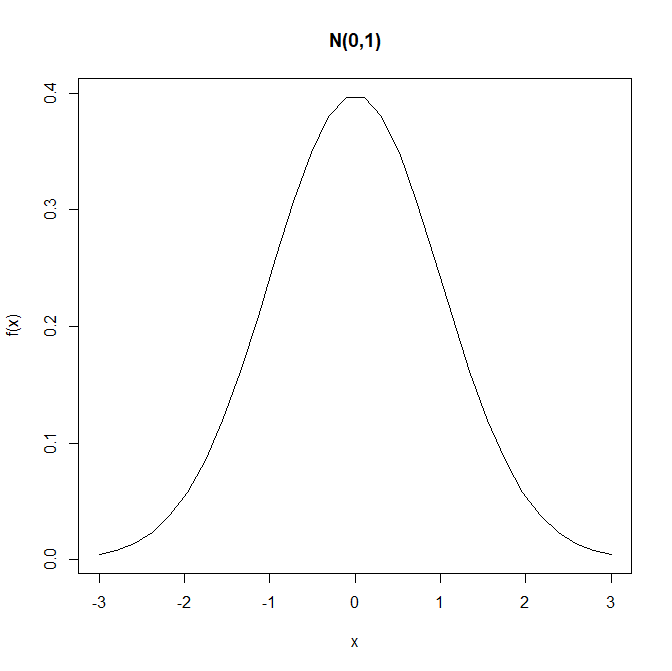
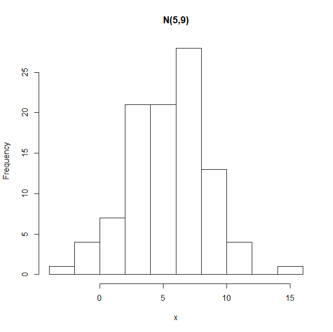

함수
함수1. 내장 함수1-1. 내장함수의 종류 1-2. 내장함수 예제1-3. 확률분포와 관련된 함수 1) 정규분포2) 이항분포 1-4. 기타 내장함수들 1) print() : 객체의 값을 화면에 출력 2) cat() : 문자열 및 연산결과를 동시에 출력 화면에 프린트 3) unique() : 서로 다른 원소값들4) substr(x, start, stop) : 문자열에서 일부 추출 5) paste(..., sep=""): 문자열의 결합 2. 사용자 정의 함수 2-1. 수학 함수 2-2. 프로그램 함수 : 수학함수와 동일한 개념, 용어는 다소 상이2-3. R 에서 사용자 함수의 정의 방법 2-4. 사용자 함수의 호출 2-5. 사용자 정의 함수 작성 예제 [예제 1] 아래의 수학 함수에서 f(3,4), f(1,2)를 계산해 보자. f(x1,x2) = x1^2 + x2^2 1) R 함수 정의 [예제 2] 모평균이 m이고, 모표준편차가 s인 정규분포에서, 난수 n개를 생성하여, 히스토그램과 상자그림을 그리는 함수 1) R 함수 정의 2) 함수 호출
1. 내장 함수
1-1. 내장함수의 종류
| 함수 | R 함수 |
|---|---|
| 제곱근 | sqrt |
| 지수함수 | exp |
| 로그함수 | log(5), log2(5), log10(5), log(5, base=3) |
| 최대값 | max, pmax |
| 최소값 | min, pmin |
| 합 | sum |
| 평균 | mean |
| 절대값 | abs |
| 누적연산 | cummax, cummin, cumprod, cumsum |
| 삼각함수 | sin, cos, tan |
| 올림,반올림.. | ceiling, round, trunc, floor |
1-2. 내장함수 예제
xxxxxxxxxxa <- 1:5 sqrt(a) exp(a) out <- (a + sqrt(a))/(exp(2)+1); out x1 <- seq(-2, 4, by = .5); x1 floor(x1) trunc(x1) a <- c(1,-2,3,-4) b <- c(-1,2,-3,4) min(a,b) pmin(a,b)결과 :
xxxxxxxxxx> a <- 1:5> sqrt(a)## [1] 1.000000 1.414214 1.732051 2.000000 2.236068> exp(a)## [1] 2.718282 7.389056 20.085537 54.598150 148.413159>> out <- (a + sqrt(a))/(exp(2)+1); out## [1] 0.2384058 0.4069842 0.5640743 0.7152175 0.8625604>> x1 <- seq(-2, 4, by = .5); x1## [1] -2.0 -1.5 -1.0 -0.5 0.0 0.5 1.0 1.5 2.0 2.5 3.0 3.5## [13] 4.0>> floor(x1)## [1] -2 -2 -1 -1 0 0 1 1 2 2 3 3 4>> trunc(x1)## [1] -2 -1 -1 0 0 0 1 1 2 2 3 3 4>> a <- c(1,-2,3,-4)> b <- c(-1,2,-3,4)>> min(a,b)## [1] -4>> pmin(a,b)## [1] -1 -2 -3 -4
1-3. 확률분포와 관련된 함수
1) 정규분포
xxxxxxxxxxdnorm(x, mean=0, sd=1) # 확률밀도함수 x <- seq(-3,3, length=30) y <- dnorm(x) plot(x, y, type='l', main="N(0,1)", ylab="f(x)") 결과 :

pnorm(q, mean=0, sd=1): Z∼N(0,12)인 누적분포함수P(Z≤1.96) = ?
xxxxxxxxxxpnorm(1.96) 결과 :
xxxxxxxxxx> pnorm(1.96)## [1] 0.9750021
rnorm(n, mean=0, sd=1): 난수(랜덤넘버)생성
xxxxxxxxxxrnorm(10)결과 :
xxxxxxxxxx> rnorm(10)## [1] -2.4889669 -0.1988307 0.3942407 -0.7583794 0.3852281## [6] 0.3809737 -1.0661356 -0.3894842 -0.8769265 -0.9841782
2) 이항분포
xxxxxxxxxxdbinom(x, size, prob)pbinom(q, size, prob)qbinom(p, size, prob)rbinom(n, size, prob)
1-4. 기타 내장함수들
1) print() : 객체의 값을 화면에 출력
xxxxxxxxxxa <- c(5,3,6,2,4) print(a) 결과 :
xxxxxxxxxx> a <- c(5,3,6,2,4)> print(a)## [1] 5 3 6 2 4
2) cat() : 문자열 및 연산결과를 동시에 출력 화면에 프린트
xxxxxxxxxxcat("mean of a is ",mean(a), "variance of a is ", var(a),"\n") 결과 :
xxxxxxxxxx> cat("mean of a is ",mean(a), "variance of a is ", var(a),"\n")## mean of a is 4 variance of a is 2.5
3) unique() : 서로 다른 원소값들
xxxxxxxxxxx <- c(1,5,1,3,5,7,5) unique(x)결과 :
xxxxxxxxxx> x <- c(1,5,1,3,5,7,5)> unique(x)## [1] 1 5 3 7
4) substr(x, start, stop) : 문자열에서 일부 추출
xxxxxxxxxxx <- c("노무현","이명박", "박근혜", "문재인") substr(x, 1, 1) 결과 :
xxxxxxxxxx> x <- c("노무현","이명박", "박근혜", "문재인")> substr(x, 1, 1)## [1] "노" "이" "박" "문"
5) paste(..., sep=""): 문자열의 결합
xxxxxxxxxxpaste("x",1:3,sep="") paste("x",1:3,sep="M") paste("Today is", date())결과 :
xxxxxxxxxx> paste("x",1:3,sep="")## [1] "x1" "x2" "x3"> paste("x",1:3,sep="M")## [1] "xM1" "xM2" "xM3"> paste("Today is", date())## [1] "Today is Mon Oct 07 12:25:16 2019"
2. 사용자 정의 함수
2-1. 수학 함수
y = f(x1,x2)
- f : 함수이름
- x1,x2는 입력 값
- y는 결과값
2-2. 프로그램 함수 : 수학함수와 동일한 개념, 용어는 다소 상이
- f : 함수이름
- x1, x2를 인수(input arguments)
- y는 결과값 (반환값, return value)
2-3. R 에서 사용자 함수의 정의 방법
xxxxxxxxxxfunction_name <- function(인수1, 인수2, ...) {여기에 함수 계산 내용을 R 코드로 삽입return(반환값)}
2-4. 사용자 함수의 호출
xxxxxxxxxxfunction_name(arg_1 = 1)function_name(arg_2 = 1, arg_1 = 3)function_name(3, 1)
2-5. 사용자 정의 함수 작성 예제
[예제 1] 아래의 수학 함수에서 f(3,4), f(1,2)를 계산해 보자. f(x1,x2) = x1^2 + x2^2
1) R 함수 정의
xxxxxxxxxxf <- function(x1, x2) { y <- x1 ^2 + x2 ^2 return(y) }결과 :
xxxxxxxxxx> f <- function(x1, x2) {+ y <- x1 ^2 + x2 ^2+ return(y)+ }
2) 함수 호출
xxxxxxxxxxf(x1=1, x2=2) f(3, 4) f(x1=c(1,2), x2=c(3,4))결과 :
xxxxxxxxxx> f(x1=1, x2=2)## [1] 5> f(3, 4)## [1] 25> f(x1=c(1,2), x2=c(3,4))## [1] 10 20
[예제 2] 모평균이 m이고, 모표준편차가 s인 정규분포에서, 난수 n개를 생성하여, 히스토그램과 상자그림을 그리는 함수
1) R 함수 정의
xxxxxxxxxxnormal_hist <- function(m, s, n) { x <- rnorm(n, mean=m, sd=s) hist(x, main=paste0("N(",m, ",", s^2, ")")) }결과 :
xxxxxxxxxx> normal_hist <- function(m, s, n) {+ x <- rnorm(n, mean=m, sd=s)+ hist(x, main=paste0("N(",m, ",", s^2, ")"))+ }
2) 함수 호출
xxxxxxxxxxnormal_hist(m=5, s=3, n=100)결과 :
